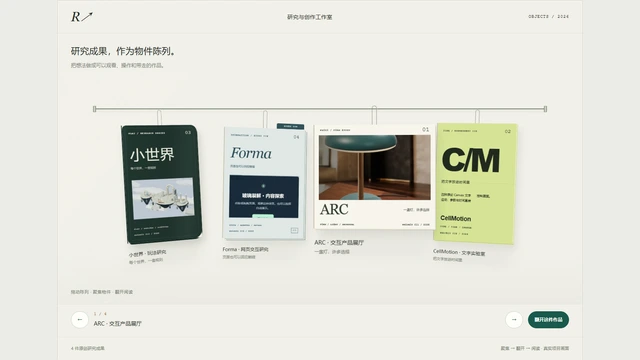
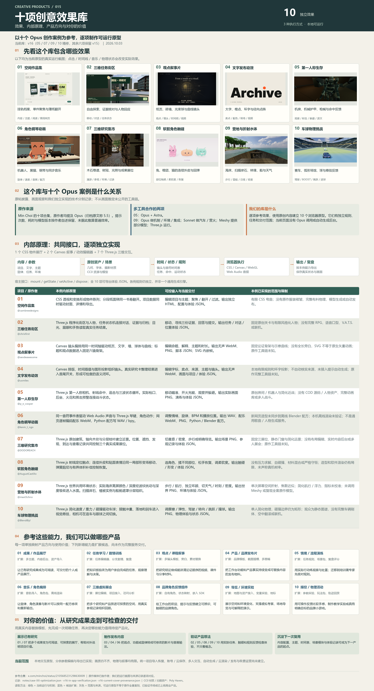

进入独立演示 ↗COMPLETE LIBRARY · 2026.10.08
十项创意效果库。
从作品看能力，把十个案例逐一变成我们的实际产品演示。
10 个原作案例10 个对应演示8 组产品方向
UNDERSTANDING / EFFECTS / PRODUCTS
我们的理解与十项实际效果，
从这里一起看。
这是一组以十个 Opus 创作案例为参考的原创浏览器原型。作品集、任务街区、叙事片、发布动效、机房生存、钢琴角色、研究集市、软胶、营地与车球，分别保留自己的效果依据、实现机制和产品方向。
用真实截图先看效果，再打开单项演示核对输入、动作与输出。完整理解页说明 1 个 CSS、2 个 Canvas、7 个 Three.js 原型的内部原理、交付范围、扩展路径和对你的价值。
研究：2026.10.02 · 效果快照：2026.10.03 · 整理发布：2026.10.08
05 / 07 / 09 / 10 为 v16，其余六项为 v15。当前没有 Opus 调用或模型生成后台。

放大完整总览图 ↗下载高清 PNG · 下载可编辑 SVG · 图文一起阅读
10 ORIGINAL PROTOTYPES
十个项目，各自看效果、操作和原理。
每张图都对应正在发布的原型。原作对照、独立试玩与本例原理分开直达；视频、音频、图片、离线网页等输出按单项能力提供。
01 / ORIGINAL SHOWCASE
十个原作，直接在这里看。
点击画面播放原作者演示。网站、游戏、三维世界和音乐动画都保留署名；看完可直接进入制作思路。
02 / CASE EXPLORER
先看作品，再看怎么做。
10 个来源案例
没有匹配案例，试试其他关键词。
如何阅读
“原文确认”表示原作者公开披露，未作独立性能验证。“制作推演”是参考能力提出的实现路径。视频仅在点击播放后从原作者媒体服务器加载；无法播放时可打开原帖。
03 / CAPABILITY MAP
作品背后，是一条可复用的流程。
定义体验
目标用户、输入内容、核心动作、完成标准。
人做取舍组织与编码
模型拆任务、编写逻辑，迭代视觉与交互。
模型做设计和实现执行与呈现
浏览器运行游戏；Python 与 Blender 生成并渲染作品。
工具把代码变成结果试用与验收
检查内容、可用性、稳定性，验证真实需求。
用户体验决定价值从十个案例抽出的能力
我们可以复用的制作原则
这些判断，证据有多充分？
| 案例 | 公开信息 | 流程完整度 | 待核对 |
|---|
复用能力时的技术入口
这些是我们的候选实现路线。除原文已明确的工具外，不据此推定原作者使用相同技术。
扩展的关键
把每次创作沉淀为素材约定、配置参数、可重复的执行流程和验收标准，才有机会从一次展示走向持续使用的产品。
04 / TEN INDIVIDUAL PRODUCTS
同一项，先看画面。
逐项对照原作与当前效果，再进入可以操作的演示。每项都写明自己的视觉差距；产品方向建立在具体作品上。
十项产品与任务索引
| 来源案例 | 对应产品 | 我们要完成的任务 | 实际效果 |
|---|
05 / CASE BY CASE
逐个项目分析，逐个项目优化。
选择一个项目，先看它的原作目标、优化前的问题与本次重点，再亲自操作效果。下方展示这一例的具体改动、验收和剩余差距。
观看本例原作，核对参考依据
补充实验：ARC 桌灯选型展示单产品配置与交付流程，保留为额外参考，不计入这十个对应演示。